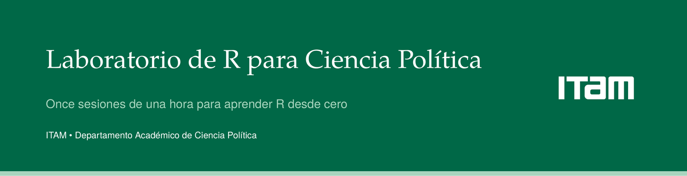

Laboratorio de R para Ciencia Política

Este laboratorio existe para que aprendas a convertir una intuición política en una pregunta que se puede contestar con datos. No es un curso de programación disfrazado de ciencia política: es al revés. R es la herramienta; la pregunta politológica es el contenido.
Adónde vamos
En once horas vas a poder contestar esto, con datos oficiales:
La pregunta del proyecto final
¿Los municipios donde Morena arrasó en 2024 son los mismos donde ganaron las candidaturas morenistas a ministra en la elección judicial de 2025?
Dos mapas sobrepuestos, una regresión, y una respuesta que se puede defender. Ese proyecto —Morena × ministras— se enseña como promesa desde esta misma página, y se construye de principio a fin en la sesión 11, en pareja con inteligencia artificial usada con criterio. Hoy no. Hoy empieza con un gráfico de barras.
El hilo conductor de las once sesiones es mexicano, con contrapunto comparado: los ejemplos en vivo usan datos de elecciones mexicanas, porque son datos que reconoces, y los ejercicios alternan hacia bases comparadas —V-Dem, Latinobarómetro, Quality of Government— para que veas que R sirve igual en política comparada y en relaciones internacionales.
Qué es este laboratorio
El Laboratorio de R para Ciencia Política es un curso de once sesiones de una hora, impartido por Emiliano Miranda González por encargo del Departamento Académico de Ciencia Política del ITAM. Cada sesión se reparte entre recapitulación, código en vivo y un ejercicio guiado, y cada una termina con algo visible: un gráfico, una tabla, un mapa. No hay evaluación con valor curricular ni asistencia obligatoria; hay una hora a la semana, a la de la comida, para dejar de tenerle miedo a los datos.
Para quién es
Está diseñado para estudiantes de primeros semestres de Ciencia Política y Relaciones Internacionales del ITAM que nunca han programado en ningún lenguaje y que todavía no han cursado Estadística I ni Estadística II. No se necesita saber qué es un directorio de trabajo, ni haber usado GitHub, ni tener ninguna base previa de estadística: todo eso se explica desde cero, la primera vez que se necesita. Lo único que se pide es curiosidad por una pregunta política real.
Cómo empezar
Si nunca has instalado R ni RStudio, empieza por la página Empieza aquí: ahí está la instalación paso a paso, sin suponer que ya sabes nada, y sin necesidad de usar git. Descargas el repositorio completo con un botón, abres un archivo y quedas listo para la sesión 1 en menos de quince minutos.
Si ya tienes R, RStudio y el repositorio descargados, entra directamente a la tarjeta de la sesión 1 más abajo.
Las once sesiones
Sesión 01 · Tu primera hora en R
¿Por qué un politólogo programa?
Entregable: un gráfico de barras de la elección 2024, hecho de cero en la sesión.
Sesión 02 · Los datos son tablas
¿Cómo se ve una base de datos por dentro?
Entregable: cargar y describir una base electoral real.
Sesión 03 · Pedirle cosas a los datos
¿Dónde ganó Morena por más de veinte puntos?
Entregable: una tabla filtrada que contesta una pregunta propia.
Sesión 04 · Agrupar, resumir, cruzar
¿Cómo comparo estados entre sí?
Entregable: cruzar dos bases y resumir por entidad.
Sesión 05 · La gramática de los gráficos
¿Por qué unos gráficos convencen y otros no?
Entregable: un gráfico con título, fuente y paleta defendible.
Sesión 06 · Gráficos que se publican
¿Cómo hago una figura de paper?
Entregable: una figura en PDF lista para un trabajo final.
Sesión 07 · El mapa de México
¿Cómo se ve el voto en el territorio?
Entregable: un mapa coroplético de resultados 2024.
Sesión 08 · Describir sin mentir
¿Qué significa que dos cosas “van juntas”?
Entregable: un scatter con línea de tendencia e interpretación escrita.
Sesión 09 · La regresión como instrumento politológico
¿Cuánto explica X a Y?
Entregable: una tabla de regresión con lectura en prosa.
Sesión 10 · Que otro pueda repetirlo
¿Cómo entrego trabajo serio?
Entregable: un reporte reproducible propio, publicado.
Sesión 11 · La IA como copiloto, no como piloto
¿Cómo uso Claude sin dejar de aprender?
Entregable: el proyecto Morena × ministras, hecho en pareja con la IA.
Más allá de las once horas
Once horas no alcanzan para cubrir todo lo que vale la pena saber. La carpeta Extras reúne módulos autoestudiables sobre funciones e iteración, probabilidad y simulación, modelos logit y GLM, datos de panel y efectos fijos, un primer vistazo a inferencia causal, y una guía para quien viene de Stata. La sección Recursos tiene el glosario de términos en inglés, el catálogo de errores comunes y una guía de hacia dónde seguir. La sección IA explica cómo usar inteligencia artificial en el trabajo cuantitativo sin dejar de ser tú quien piensa.